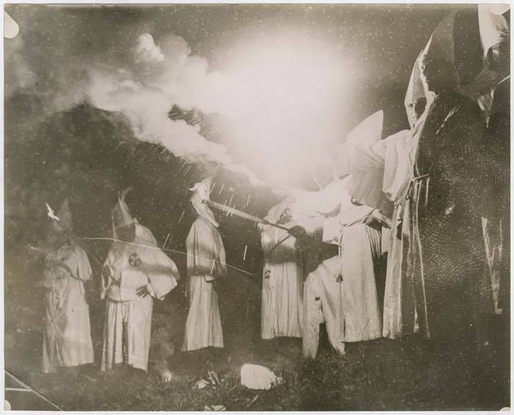
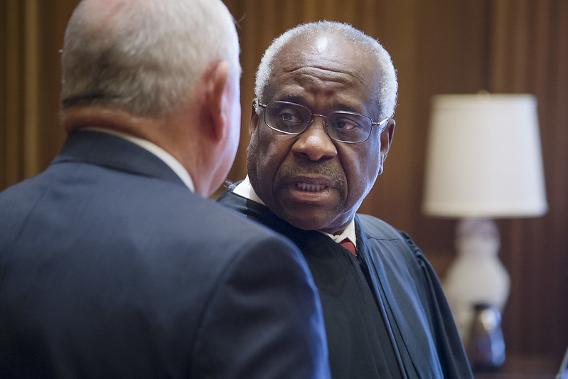

2023-05-12 08:00

White racists burning something: the common notion of white supremacy
The gunman who opened fire with an AR-15 at a Dallas mall on May 6th, killing eight including numerous members of one Korean family, was clearly targeting Asians. Perhaps it was the shooter’s name, Mauricio Garcia, that confused Texas governor Greg Abbot, who told reporters that the killer’s motivations were “unclear.” Within hours, however, investigators had discovered the extent of Garcia’s white supremacist views and connections, which included being an admirer of Adolf Hitler.
The very idea that a member of an ethnic or racial minority could be a white supremacist continues to boggle the minds of far-right pundits. Don Trump Jr. mockingly posted on Truth Social, “Because the name Mauricio Garcia screams white supremacy.” Elon Musk tweeted images of carnage from the shooting as well as disinformation, including a conspiracy theory that a Hispanic white supremacist just had to be a “psyop.” His speculation seemed to resonate with Musk’s far-right followers. When NBA-to-Twitter personality Rex Chapman called Clarence Thomas a white supremacist, FOX News mocked it as a typical liberal reaction to overturning Roe v. Wade (we will return to Justice Thomas shortly).
So don’t you have to be white to be a white supremacist?
The far-right insists that we now live in a post-racial society free of white supremacy and bias. Sure, there may still be a few overt haters out there – but not us! Denial of racism is such an important weapon of the far-right that now even speaking of America’s history of racial crimes is itself a crime in numerous states.
References to slavery, Jim Crow, segregation, white-only water fountains, lynchings, genocide of Native Americans, colonialism, racist immigration laws, redlining, disparities in healthcare, life expectancy, education, or generational wealth – all this is regarded as “divisive,” intended only to make white school children feel bad about being white, and therefore something to be censored.
Still, the far-right is equally clear that White Christian Nationalism is their political platform. Republicans point to Hungarian autocrat Viktor Orban’s regime as their model for a white, Christian America. Former Congressman Steve King, an unrepentant white supremacist, granted an interview with Austrian fascists. Former president Trump, now looking like the leading GOP presidential candidate, has embraced neofascists in Italy, France, and Brazil. Trump’s one-time campaign advisor Steve Bannon has made the creation of a fascist Internationale one of his projects.
In July 2022 Marjorie Taylor Greene came out as an unapologetic Christian nationalist. Ditto her moral and intellectual equal, Lauren Boebert, who told a group of white fundamentalists, “The church is supposed to direct the government, the government is not supposed to direct the church.” South Carolina Senator Tim Scott, once thought to be a “moderate” Republican, echoed the sentiment, stating that government ought to be “bowing the knee” to the church. And by “church” Scott does not mean Buddhists, Jews, Muslims, Quakers, or once-mainstream Christian denominations.
Just this week Alabama Senator Tommy Tuberville defended white nationalists in the military, calling them good Americans. This recalls Trump’s characterization of the Tiki torch-bearing white supremacists as “very fine people.”
Despite its obsession with white Anglo-Saxon “culture,” the dangers of multiculturalism, the Great Replacement of white people by people of color, and its perverse, nationalist conception of “Christianity,” White Christian Nationalism is also increasingly being embraced by people of color.
A few examples: former HUD secretary and denier that racism exists Ben Carson; South Carolina Senator and Christian Nationalist Tim Scott; perennial presidential candidate and antisemite Kanye West whose campaign advisor is a racist, misogynistic British fascist; North Carolina gubernatorial aspirant, Islamophobe and homophobe Mark Robinson; convicted seditionist and Proud Boy Enrique Tarrio; self-described white nationalist Nick Fuentes; and domestic terrorist and repeat seditionist Brandon Rapolla.
It came as a surprise to no one in Memphis’ Black community that the five officers who beat Tyre Nichols to death were Black. Turns out, how Black police officers approach policing is shaped by policies based on lingering structural racism in law enforcement institutions. Again, white supremacy is much more than overt hatred.
Such observations are nothing new. In the wake of the Dallas shooting Joan Walsh wrote an excellent piece in the Nation. Frank Vyan Walton published a short piece in the Daily Kos. Philip Bump offered an explanation in the Washington Post of why non-whites embrace white supremacy.
One factor is self-identification with a dominant racial and ethnic group. Increasingly, some non-white communities now identify as white. Another is placing one’s self closer to the sources of political power. Hispanic Americans now increasingly identify with white supremacy. And that includes Mauricio Garcia, the Dallas shooter.
A new TV series “Beef” features two Asian characters acting out their very “white” grievances with each other and America. In a piece in Electric Lit Frankie Huang dissects the two protagonists and their complicated relationships with white society. He parenthetically blasts members of his own community for cultural expropriation, exploiting “model minority” status, and a lack of solidarity with other minorities – all of which applies to every other ethnic group throughout American history that has embraced “whiteness” by turning its back on egalitarian ideals in order to stand nearer the sources of power and money.

Clarence chose his side and it pays pretty damn well
In an old article in the Nation, Randall Kennedy asks “Whose Side is Clarence Thomas On?” and proceeds easily to a conclusion. Quoting Corey Robin, who has written a number of books on far-right ideology, “Thomas has rationalized nearly all of his efforts to maintain the legal architecture under which African Americans have suffered most because ‘adversity helps the black community develop its inner virtue and resolve.’ Robin adds, ‘It’s astonishing how openly Thomas embraces not just federalism but a view of federalism associated with the slaveocracy and Jim Crow.’”
Ouch.
Thomas then, regardless of race, turns out to be the ideal Supreme Court justice for the far right and its white supremacist agenda. In a new PBS documentary, Clarence and Ginni Thomas: Politics, Power and the Supreme Court, we learn that Thomas has a whole list of his own grievances meshing improbably with White America’s.
Add to this Thomas’s marriage to one of America’s most zealous far-right activists and arguably a seditionist, as well as Thomas’s selling himself to Sugar Daddy Harlan Crow, and it becomes clear that white supremacy is not so much about spewing racial epithets as the preservation and concentration of political and economic power.
White supremacists of whatever race know exactly which side they’re on.